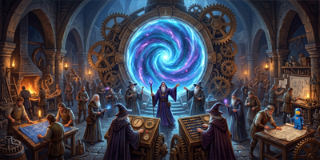

Effect:Splits hiring process splits into tiers. Requests broad and diverse candidate pool. Unlocks: Reduced bias.
Built a tiered hiring process in partnership with HR — hiring manager operates blind while HR maintains pool diversity. Written hiring templates focused on culture add were adopted by the People team for process interview scripts. The best candidate was always in the pool. The process just had to let them through.
"Shuffle the deck properly and the right
card shows up every time."
card shows up every time."